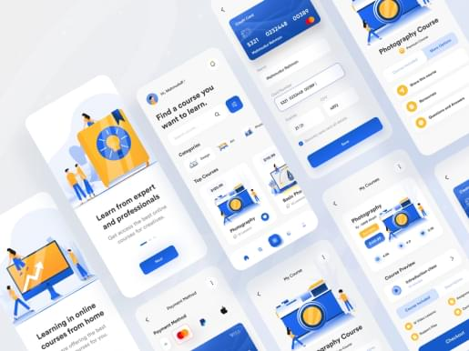
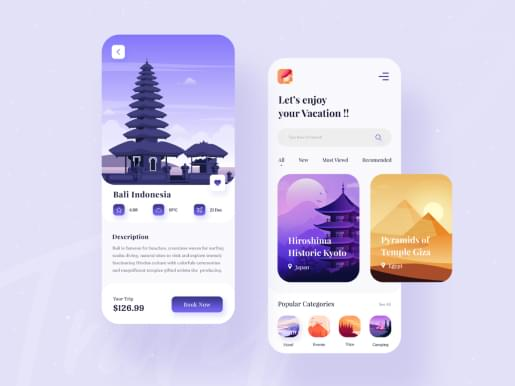
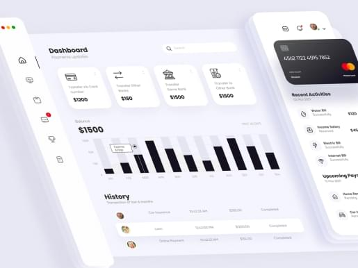

‘’Musa has benn an outstanding contributor to our team’s UI Designer needs highly recommened’’
Jason Holder
UX Designer at Futura
Hey, I’m Musa
Building Digital Products, Brands & Experience.
STATISTIC
300+
Project Delivery
8
Years Experience
16
Awards
70+
Happy Clients
Services
Building Digital Product With Better Experience
UI/UX Design
I’ve created a user interface and user experience with some proccess and method.
Web Development
I’ve created a user interface and user experience with some proccess and method.
Visual Branding
I’ve created a user interface and user experience with some proccess and method.
App Development
I’ve created a user interface and user experience with some proccess and method.
Featured My Portfolio
Explore some of my latest website projects. Non suscipit ex blandit vitae. Pellentesque vel urna id massa sagittis luctus Fusce iaculis.

Website Design
Our website designers have penetrated the mysteries of emotional response to color, image, and eye-tracking. Every element is geared to create maximum appeal.
Read Case Study
- 
Product Design
Our Product designers have penetrated the mysteries of emotional response to color, image, and eye-tracking. Every element is geared to create maximum appeal.
Read Case Study
- 
App Design
Our App designers have penetrated the mysteries of emotional response to color, image, and eye-tracking. Every element is geared to create maximum appeal.
Read Case Study
- 
DashBoard Design
Our Dashboard designers have penetrated the mysteries of emotional response to color, image, and eye-tracking. Every element is geared to create maximum appeal.
Read Case Study